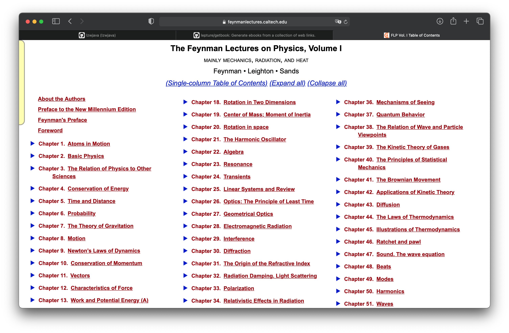

Inhalte von Websites extrahieren | Original, von KI übersetzt
Es gibt bereits viele Tools, die Inhalte von Websites extrahieren können. Wenn wir sie jedoch verwenden, können wir den dahinterliegenden Prozess nicht besser verstehen. Wenn wir bei der Arbeit auf komplexe oder spezielle Websites stoßen, können diese Tools möglicherweise nicht die gewünschten Ergebnisse liefern. Wir müssen das Rad neu erfinden, um sie besser zu lernen und effektiver einzusetzen.
Schauen wir uns auch einige der vorhandenen Tools an.
Data Miner

Data Miner ist ein sehr praktisches Plugin für Chrome. Es ermöglicht das einfache Extrahieren von Links und Inhalten.
getbook
getbook ist ein sehr praktisches Werkzeug zur Erstellung von E-Books.
pip install getbook
book.json:
{
"uid": "book",
"title": "Hello World",
"author": "Armin",
"chapters": [
"http://lucumr.pocoo.org/2018/7/13/python/",
"http://lucumr.pocoo.org/2017/6/5/diversity-in-technology",
]
}
getbook -f ./book.json --mobi
Auf diese Weise können einige Links bequem in ein E-Book umgewandelt werden. Durch die Verwendung von Data Miner und getbook – eines zum Extrahieren der Links und eines zum Umwandeln der Links in ein E-Book – lässt sich ein E-Book sehr einfach erstellen.
Feynmans Physikvorlesungen

Im Kapitel „Projektpraxis: Erstellen eines E-Books aus den Webseiten der Feynman-Vorlesungen über Physik“ haben wir gelernt, wie man eine mit mathjax gerenderte html-Webseite in ein E-Book verwandelt. Hier setzen wir dieses Projekt fort und schauen uns an, wie man alle Webseiten abrufen kann. Die Feynman-Vorlesungen über Physik bestehen aus drei Bänden. Das obige Bild zeigt das Inhaltsverzeichnis des ersten Bandes.
http.client — HTTP-Protokoll-Client
Quellcode: Lib/http/client.py
Dieses Modul definiert Klassen, die die Client-Seite der HTTP- und HTTPS-Protokolle implementieren. Es wird normalerweise nicht direkt verwendet — das Modul urllib.request verwendet es, um URLs zu verarbeiten, die HTTP und HTTPS verwenden.
Siehe auch: Das Requests-Paket wird für eine höherwertige HTTP-Client-Schnittstelle empfohlen.
Sichtbar ist, dass requests eine höherwertige Schnittstelle ist.
import requests
def main():
r = requests.get('https://api.github.com/user', auth=('user', 'pass'))
print(r.status_code)
main()
```shell
401
import requests
def main():
r = requests.get('https://github.com')
print(r.status_code)
print(r.text)
200
<html>
...
</html>
Ich habe es ausprobiert, und es zeigt, dass die Schnittstelle von requests funktioniert.
<div class="toc-chapter" id="C03">
<span class="triangle">
â¶
</span>
<a class="chapterlink" href="javascript:Goto(1,3)">
<span class="tag">
Kapitel 3.
</span>
Die Beziehung der Physik zu anderen Wissenschaften
</a>
<div class="sections">
<a href="javascript:Goto(1,3,1)">
<span class="tag">
3-1
</span>
Einführung
</a>
<a href="javascript:Goto(1,3,2)">
<span class="tag">
3-2
</span>
Chemie
</a>
<a href="javascript:Goto(1,3,3)">
<span class="tag">
3-3
</span>
Biologie
</a>
<a href="javascript:Goto(1,3,4)">
<span class="tag">
3-4
</span>
Astronomie
</a>
<a href="javascript:Goto(1,3,5)">
<span class="tag">
3-5
</span>
Geologie
</a>
<a href="javascript:Goto(1,3,6)">
<span class="tag">
3-6
</span>
Psychologie
</a>
<a href="javascript:Goto(1,3,7)">
<span class="tag">
3-7
</span>
Wie ist es dazu gekommen?
</a>
</div>
</div>
Dies ist der html-Code des dritten Kapitels auf der Inhaltsverzeichnis-Seite. Von hier aus möchte ich die Links zu jedem Kapitel extrahieren. <a href="javascript:Goto(1,3,7)"> zeigt, dass es sich um einen JavaScript-Hyperlink handelt.
https://www.feynmanlectures.caltech.edu/I_03.html
Dann stellte ich fest, dass der Pfad jedes Kapitels einem bestimmten Muster folgt. I_03.html steht beispielsweise für Kapitel 3 des ersten Bandes.
import requests
from bs4 import BeautifulSoup
from multiprocessing import Process
def scrape(chapter):
if chapter < 1 or chapter > 52:
raise Exception(f'Kapitel {chapter}')
chapter_str = '{:02d}'.format(chapter)
url = f'https://www.feynmanlectures.caltech.edu/I_{chapter_str}.html'
print(f'Scraping {url}')
r = requests.get(url)
if r.status_code != 200:
raise Exception(r.status_code)
soup = BeautifulSoup(r.text, features='lxml')
f = open(f'./chapters/I_{chapter_str}.html', 'w')
f.write(soup.prettify())
f.close()
def main():
for i in range(52):
p = Process(target=scrape, args=(i+1))
p.start()
p.join()
main()
Lass uns weiter über den Code zum Scrapen schreiben. Hier wird Process verwendet.
raise RuntimeError('''
RuntimeError:
Es wurde versucht, einen neuen Prozess zu starten, bevor der
aktuelle Prozess seine Initialisierungsphase abgeschlossen hat.
Dies bedeutet wahrscheinlich, dass Sie nicht `fork` verwenden, um Ihre
Kindprozesse zu starten, und dass Sie vergessen haben, die richtige Vorgehensweise
im Hauptmodul zu verwenden:
```python
if __name__ == '__main__':
freeze_support()
...
Die Zeile "freeze_support()" kann weggelassen werden, wenn das Programm
nicht eingefroren wird, um eine ausführbare Datei zu erzeugen. ```
def main():
for i in range(52):
p = Process(target=scrape, args=(i+1,))
p.start()
p.join()
(Der Code bleibt auf Englisch, da es sich um eine Programmiersprache handelt und die Übersetzung den Code unbrauchbar machen würde.)
if __name__ == "__main__":
main()
def main():
start = timeit.default_timer()
ps = [Process(target=scrape, args=(i+1,)) for i in range(52)]
for p in ps:
p.start()
for p in ps:
p.join()
stop = timeit.default_timer()
print('Zeit: ', stop - start)
if __name__ == "__main__":
main()
scraping https://www.feynmanlectures.caltech.edu/I_01.html
scraping https://www.feynmanlectures.caltech.edu/I_04.html
...
scraping https://www.feynmanlectures.caltech.edu/I_51.html
scraping https://www.feynmanlectures.caltech.edu/I_52.html
Zeit: 9.144841699

<div class="figure" id="Ch1-F1">
<img src="img/FLP_I/f01-01/f01-01_tc_big.svgz">
<div class="caption empty">
<span class="tag">
Abbildung 1–1
</span>
</div>
</div>
import requests
from bs4 import BeautifulSoup
from multiprocessing import Process
import timeit
def scrape(chapter):
if chapter < 1 or chapter > 52:
raise Exception(f'Kapitel {chapter}')
chapter_str = '{:02d}'.format(chapter)
url = f'https://www.feynmanlectures.caltech.edu/I_{chapter_str}.html'
print(f'Scraping {url}')
r = requests.get(url)
if r.status_code != 200:
raise Exception(r.status_code)
soup = BeautifulSoup(r.text, features='lxml')
f = open(f'./chapters/I_{chapter_str}.html', 'w')
f.write(soup.prettify())
f.close()
def main():
start = timeit.default_timer()
ps = [Process(target=scrape, args=(i+1,)) for i in range(52)]
for p in ps:
p.start()
for p in ps:
p.join()
stop = timeit.default_timer()
print('Zeit: ', stop - start)
if __name__ == "__main__":
main()
Schauen Sie sich den Link an.
imgs = soup.find_all('img')
for img in imgs:
print(img)
(Der Code bleibt auf Englisch, da es sich um eine Programmiersprache handelt und die Befehle nicht übersetzt werden sollten.)
Scraping von https://www.feynmanlectures.caltech.edu/I_01.html
<img id="TwitLink" src=""/>
<img id="FBLink" src=""/>
<img id="MailLink" src=""/>
<img id="MobileLink" src=""/>
<img id="DarkModeLink" src=""/>
<img id="DesktopLink" src=""/>
<img src="img/camera.svg"/>
<img src="img/FLP_I/f01-00/f01-00.jpg"/>
<img data-src="img/FLP_I/f01-01/f01-01_tc_big.svgz"/>
<img data-src="img/FLP_I/f01-02/f01-02_tc_big.svgz"/>
<img data-src="img/FLP_I/f01-03/f01-03_tc_big.svgz"/>
<img data-src="img/FLP_I/f01-04/f01-04_tc_big.svgz"/>
<img data-src="img/FLP_I/f01-05/f01-05_tc_big.svgz"/>
<img data-src="img/FLP_I/f01-06/f01-06_tc_big.svgz"/>
<img class="first" data-src="img/FLP_I/f01-07/f01-07_tc_iPad_big_a.svgz"/>
<img class="last" data-src="img/FLP_I/f01-07/f01-07_tc_iPad_big_b.svgz"/>
<img data-src="img/FLP_I/f01-08/f01-08_tc_big.svgz"/>
<img data-src="img/FLP_I/f01-09/f01-09_tc_big.svgz"/>
<img data-src="img/FLP_I/f01-10/f01-10_tc_big.svgz"/>
https://www.feynmanlectures.caltech.edu/img/FLP_I/f01-01/f01-01_tc_big.svgz
(Der Link bleibt unverändert, da es sich um eine URL handelt.)
Verboten
Sie haben keine Berechtigung, auf diese Ressource zuzugreifen.
Apache/2.4.38 (Debian) Server auf www.feynmanlectures.caltech.edu Port 443
```shell
% pip install selenium
Collecting selenium
Using cached selenium-3.141.0-py2.py3-none-any.whl (904 kB)
Requirement already satisfied: urllib3 in /usr/local/lib/python3.9/site-packages (from selenium) (1.24.2)
Installing collected packages: selenium
Successfully installed selenium-3.141.0
export CHROME_DRIVER_HOME=$HOME/dev-env/chromedriver
export PATH="${PATH}:${CHROME_DRIVER_HOME}"
Hinweis: Der obige Code ist eine Shell-Konfiguration und wird normalerweise nicht übersetzt, da er spezifisch für die Umgebung und die verwendeten Tools ist.
% chromedriver -h
Verwendung: chromedriver [OPTIONEN]
Optionen –port=PORT Port, auf dem gelauscht werden soll –adb-port=PORT Port des ADB-Servers –log-path=FILE Server-Log in Datei statt stderr schreiben, erhöht das Log-Level auf INFO –log-level=LEVEL Log-Level festlegen: ALL, DEBUG, INFO, WARNING, SEVERE, OFF –verbose Ausführlich loggen (entspricht –log-level=ALL) –silent Nichts loggen (entspricht –log-level=OFF) –append-log Log-Datei anhängen statt zu überschreiben –replayable (experimentell) Ausführlich loggen und lange Zeichenketten nicht kürzen, damit das Log wiedergegeben werden kann. –version Versionsnummer ausgeben und beenden –url-base Basis-URL-Präfix für Befehle, z.B. wd/url –readable-timestamp Lesbare Zeitstempel zum Log hinzufügen –enable-chrome-logs Logs vom Browser anzeigen (überschreibt andere Logging-Optionen) –allowed-ips Kommagetrennte Liste von Remote-IP-Adressen, die eine Verbindung zu ChromeDriver herstellen dürfen
```python
# Der Codeblock bleibt auf Englisch, da es sich um eine Programmiersprache handelt.
from selenium import webdriver
from selenium.webdriver.common.by import By
from selenium.webdriver.common.keys import Keys
from selenium.webdriver.support.ui import WebDriverWait
from selenium.webdriver.support.expected_conditions import presence_of_element_located
Dieser Code importiert verschiedene Module aus der Selenium-Bibliothek, die für die Automatisierung von Webbrowsern verwendet wird. Hier ist eine kurze Erklärung der importierten Module:
webdriver: Dies ist das Hauptmodul, das die Browsersteuerung ermöglicht.By: Dieses Modul enthält verschiedene Methoden zum Auffinden von Elementen auf einer Webseite, z.B. durch ID, Name, Klasse usw.Keys: Dieses Modul enthält spezielle Tasten wieRETURN,ENTER,TABusw., die in der Interaktion mit Webseiten verwendet werden können.WebDriverWait: Dieses Modul wird verwendet, um auf bestimmte Bedingungen zu warten, bevor weitere Aktionen ausgeführt werden.presence_of_element_located: Dies ist eine Bedingung, die darauf wartet, dass ein bestimmtes Element auf der Webseite vorhanden ist.
Diese Module sind grundlegend für die Erstellung von Skripten, die Webseiten automatisch durchsuchen und mit ihnen interagieren.
with webdriver.Chrome() as driver:
wait = WebDriverWait(driver, 10)
driver.get("https://google.com/ncr")
driver.find_element(By.NAME, "q").send_keys("cheese" + Keys.RETURN)
first_result = wait.until(presence_of_element_located((By.CSS_SELECTOR, "h3>div")))
print(first_result.get_attribute("textContent"))
# Der Codeblock bleibt auf Englisch, da es sich um eine Programmiersprache handelt.
from selenium import webdriver
from selenium.webdriver.common.by import By
from selenium.webdriver.common.keys import Keys
from selenium.webdriver.support.ui import WebDriverWait
from selenium.webdriver.support.expected_conditions import presence_of_element_located
import urllib
Der obige Code importiert verschiedene Module aus der Selenium-Bibliothek, die für die Automatisierung von Webbrowsern verwendet wird. Hier ist eine kurze Erklärung der importierten Module:
webdriver: Dies ist das Hauptmodul von Selenium, das die Browsersteuerung ermöglicht.By: Dieses Modul wird verwendet, um Elemente auf einer Webseite zu lokalisieren, z.B. durch ID, Name, Klasse usw.Keys: Dieses Modul enthält spezielle Tasten wieRETURN,ENTER,TABusw., die in der Interaktion mit Webseiten verwendet werden können.WebDriverWaitundpresence_of_element_located: Diese Module werden verwendet, um auf das Erscheinen bestimmter Elemente auf der Webseite zu warten, bevor weitere Aktionen durchgeführt werden.urllib: Dieses Modul wird für die Arbeit mit URLs verwendet, z.B. zum Herunterladen von Dateien oder zum Öffnen von URLs.
Dieser Code ist typischerweise der Anfang eines Skripts, das eine Webseite automatisiert durchsucht oder mit ihr interagiert.
def main():
driver = webdriver.Chrome()
wait = WebDriverWait(driver, 10)
driver.get("https://www.feynmanlectures.caltech.edu/I_01.html")
elements = driver.find_elements(By.TAG_NAME, "img")
# print(dir(elements[0]))
print(driver.page_source)
i = 0
for element in elements:
# src = element.get_attribute('src')
element.screenshot(f'images/{i}.png')
i +=1
driver.close()
main()
from bs4 import BeautifulSoup
from multiprocessing import Process
import timeit
from pathlib import Path
from selenium import webdriver
from selenium.webdriver.common.by import By
def img_path(chapter):
return f'./chapters/{chapter}/img'
def img_name(url):
splits = url.split('/')
last = splits[len(splits) - 1]
parts = last.split('.')
name = parts[0]
return name
def download_images(driver: webdriver.Chrome, chapter):
path = img_path(chapter)
Path(path).mkdir(parents=True, exist_ok=True)
elements = driver.find_elements(By.TAG_NAME, "img")
for element in elements:
src = element.get_attribute('src')
name = img_name(src)
element.screenshot(f'{path}/{name}.png')
USER_AGENT = ‘Mozilla/5.0 (Macintosh; Intel Mac OS X 10_15_6) AppleWebKit/605.1.15 (KHTML, wie Gecko) Version/14.0.3 Safari/605.1.15’
def scrape(chapter):
if chapter < 1 or chapter > 52:
raise Exception(f'Kapitel {chapter}')
chapter_str = '{:02d}'.format(chapter)
url = f'https://www.feynmanlectures.caltech.edu/I_{chapter_str}.html'
driver = webdriver.Chrome()
driver.get(url)
page_source = driver.page_source
Path(f'./chapters/{chapter_str}').mkdir(parents=True, exist_ok=True)
print(f'Scraping {url}')
download_images(driver, chapter_str)
soup = BeautifulSoup(page_source, features='lxml')
imgs = soup.find_all('img')
for img in imgs:
if 'src' in img.attrs or 'data-src' in img.attrs:
src = ''
if 'src' in img.attrs:
src = img.attrs['src']
elif 'data-src' in img.attrs:
src = img.attrs['data-src']
del img.attrs['data-src']
name = img_name(src)
img.attrs['src'] = f'img/{name}.png'
f = open(f'./chapters/{chapter_str}/I_{chapter_str}.html', 'w')
f.write(soup.prettify())
f.close()
driver.close()
def main():
start = timeit.default_timer()
ps = [Process(target=scrape, args=(i+1,)) for i in range(2)]
for p in ps:
p.start()
for p in ps:
p.join()
stop = timeit.default_timer()
print('Zeit: ', stop - start)
if __name__ == "__main__":
main()
scraping https://www.feynmanlectures.caltech.edu/I_01.html
scraping https://www.feynmanlectures.caltech.edu/I_02.html
Zeit: 21.478510914999998
errpipe_read, errpipe_write = os.pipe()
OSError: [Errno 24] Zu viele geöffnete Dateien
% ulimit a
ulimit: ungültige Zahl: a
lzw@lzwjava feynman-lectures-mobi % ulimit -a
-t: CPU-Zeit (Sekunden) unbegrenzt
-f: Dateigröße (Blöcke) unbegrenzt
-d: Datensegmentgröße (KByte) unbegrenzt
-s: Stack-Größe (KByte) 8192
-c: Core-Dateigröße (Blöcke) 0
-v: Adressraum (KByte) unbegrenzt
-l: Speichergröße (KByte) unbegrenzt
-u: Prozesse 2784
-n: Dateideskriptoren 256
12
download_images
12
mathjax2svg
latexs 128
make_svg 0
insert_svg 0
make_svg 1
insert_svg 1
make_svg 2
insert_svg 2
make_svg 3
insert_svg 3
convert
Hinweis: Der obige Codeblock wurde nicht übersetzt, da es sich um Befehle oder Skripte handelt, die in der Regel in ihrer ursprünglichen Form belassen werden, um ihre Funktionalität nicht zu beeinträchtigen.
12
download_images
12
mathjax2svg
latexs 0
latexs 0
convert
Zeit: 11.369145162
% grep --include=\*.html -r '\$' *
43/I_43.html:einen langen Zeitraum $T$, eine bestimmte Anzahl, $N$, von Treffern haben. Wenn wir
43/I_43.html:die Anzahl der Kollisionen proportional zur Zeit $T$ ist. Wir möchten
43/I_43.html:Wir haben die Proportionalitätskonstante als $1/\tau$ geschrieben, wobei
43/I_43.html:$\tau$ die Dimension einer Zeit haben wird. Die Konstante $\tau$ ist die
43/I_43.html:es gibt $60$ Kollisionen; dann ist $\tau$ eine Minute. Wir würden sagen,
43/I_43.html:dass $\tau$ (eine Minute) die
Fehler E21018: Beim Analysieren des Inhalts der Datei ist das Erstellen einer verbesserten Mobi-Domain fehlgeschlagen. Inhalt: <In earlier chapters > Datei: /private/var/folders/_3/n3b7dq8x6652drmx6_d3t3bh0000gr/T/069e0b8a-f12e-4102-aed3-977c0c3c1178/cTemp/mTemp/mobi-GxL1ye/OEBPS/c-49.xhtml Zeile: 969
Warnung W28001: Der Kindle-Reader unterstützt den im Inhalt angegebenen CSS-Stil nicht. CSS-Eigenschaft wird entfernt: 'max-width' Datei: /private/var/folders/_3/n3b7dq8x6652drmx6_d3t3bh0000gr/T/069e0b8a-f12e-4102-aed3-977c0c3c1178/cTemp/mTemp/mobi-GxL1ye/OEBPS/stylesheet.css
Warnung W29004: Offenes Tag wurde zwangsweise geschlossen: <span amzn-src-id="985"> Datei: /private/var/folders/_3/n3b7dq8x6652drmx6_d3t3bh0000gr/T/069e0b8a-f12e-4102-aed3-977c0c3c1178/cTemp/mTemp/mobi-GxL1ye/OEBPS/c-4.xhtml Zeile: 0000102
Warnung W29004: Offenes Tag wurde zwangsweise geschlossen: <p amzn-src-id="975"> Datei: /private/var/folders/_3/n3b7dq8x6652drmx6_d3t3bh0000gr/T/069e0b8a-f12e-4102-aed3-977c0c3c1178/cTemp/mTemp/mobi-GxL1ye/OEBPS/c-4.xhtml Zeile: 0000102
Warnung W14001: Problem mit Hyperlink, noch nicht behoben: /private/var/folders/_3/n3b7dq8x6652drmx6_d3t3bh0000gr/T/97c9cb4d-35f7-4920-81eb-4705325c482f/cTemp/mTemp/mobi-pvawPN/OEBPS/c-1.xhtml#Ch1-F1
Warnung W14001: Problem mit Hyperlink, noch nicht behoben: /private/var/folders/_3/n3b7dq8x6652drmx6_d3t3bh0000gr/T/97c9cb4d-35f7-4920-81eb-4705325c482f/cTemp/mTemp/mobi-pvawPN/OEBPS/c-1.xhtml#Ch1-F2
Warnung W14001: Problem mit Hyperlink, noch nicht behoben: /private/var/folders/_3/n3b7dq8x6652drmx6_d3t3bh0000gr/T/97c9cb4d-35f7-4920-81eb-4705325c482f/cTemp/mTemp/mobi-pvawPN/OEBPS/c-1.xhtml#Ch1-F3
<span class="disabled" href="#Ch1-F1">
1–1
</span>
Rasterisiere 'OEBPS/84b8b4179175f097be1180a10089107be75d7d85.svg' auf 1264x1011
Rasterisiere 'OEBPS/23a4df37f269c8ed43f54753eb838b29cff538a1.svg' auf 1264x259
Traceback (zuletzt aufgerufene Datei zuerst):
Datei "runpy.py", Zeile 194, in _run_module_as_main
Datei "runpy.py", Zeile 87, in _run_code
Datei "site.py", Zeile 39, in <module>
Datei "site.py", Zeile 35, in main
Datei "calibre/utils/ipc/worker.py", Zeile 216, in main
Datei "calibre/gui2/convert/gui_conversion.py", Zeile 41, in gui_convert_override
Datei "calibre/gui2/convert/gui_conversion.py", Zeile 28, in gui_convert
Datei "calibre/ebooks/conversion/plumber.py", Zeile 1274, in run
Datei "calibre/ebooks/conversion/plugins/mobi_output.py", Zeile 214, in convert
Datei "calibre/ebooks/conversion/plugins/mobi_output.py", Zeile 237, in write_mobi
Datei "calibre/ebooks/oeb/transforms/rasterize.py", Zeile 55, in __call__
Datei "calibre/ebooks/oeb/transforms/rasterize.py", Zeile 142, in rasterize_spine
Datei "calibre/ebooks/oeb/transforms/rasterize.py", Zeile 152, in rasterize_item
Datei "calibre/ebooks/oeb/transforms/rasterize.py", Zeile 185, in rasterize_external
Datei "calibre/ebooks/oeb/base.py", Zeile 1092, in bytes_representation
Datei "calibre/ebooks/oeb/base.py", Zeile 432, in serialize
TypeError: 'NoneType'-Objekt kann nicht in Bytes umgewandelt werden
% kindlepreviewer feynman-lectures-on-physics-volumn-1.epub -convert
Überprüfung der angegebenen Argumente.
Vorverarbeitung läuft.
Verarbeitung von 1/1 Buch/Büchern.
Buch mit Warnungen konvertiert! : /Users/lzw/projects/feynman-lectures-mobi/feynman-lectures-on-physics-volumn-1.epub
Nachbearbeitung läuft.
Schreiben der Ausgabe-/Protokolldateien nach /Users/lzw/projects/feynman-lectures-mobi/output
Bereinige Manifest...
Entferne ungenutzte Dateien aus dem Manifest...
Erstelle AZW3-Ausgabe...
Serialisiere Ressourcen...
Trenne Markup an Seitenumbrüchen und Flussbegrenzungen, falls vorhanden...
Erstelle KF8-Ausgabe
Generiere KF8-Markup...
Tag-Tabelle hat keine AID und eine zu große Chunk-Größe. Füge trotzdem hinzu.
Tag-Tabelle hat keine AID und eine zu große Chunk-Größe. Füge trotzdem hinzu.
Tag-Tabelle hat keine AID und eine zu große Chunk-Größe. Füge trotzdem hinzu.
Komprimiere Markup...
Erstelle Indizes...